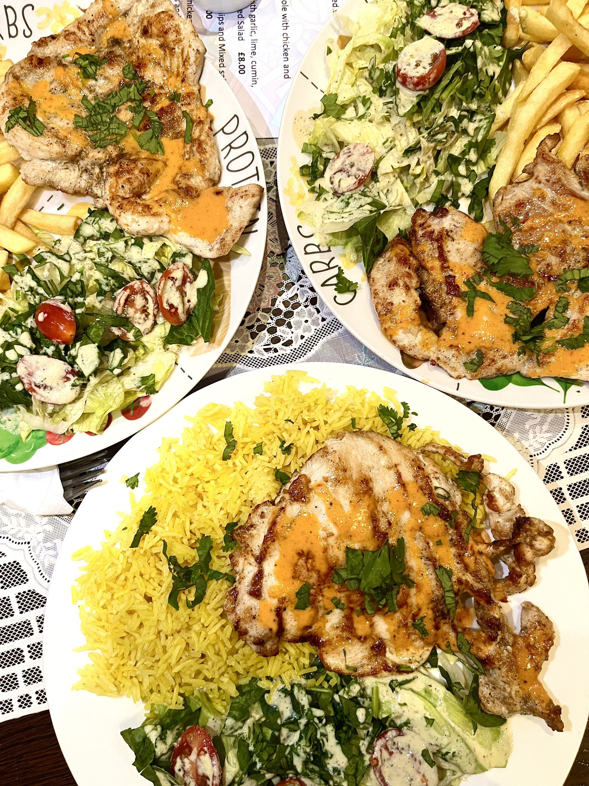

9 ODEON ARCADE · LEICESTER
LUNCH,
LATIN
STYLE.
Grilled chicken, fish, fajitas and burritos. Explore Latin Kitchen’s published menu, then put a meal note together before speaking to the team.
Find your next favourite ↓
PICK YOUR STARTING POINT
ON A PLATE.
IN YOUR HAND.
Browse dishes published on the Latin Kitchen UK delivery listing. It gives Leicester Market Food Hall, 33 Market Place; the operator’s visit address is 9 Odeon Arcade. Confirm the right location and current menu with the team.
Menu guide checked 20 October 2026. Confirm ingredients, allergens, portions and availability with the team or provider. No dietary suitability is promised here.
LIME. GARLIC. LATIN FLAVOUR.
A LITTLE
MORE TO
EXPLORE.
The published menu reaches from pollo a la plancha and fish to breakfast cobs, fajitas and burritos.
Rice of the day, chips and mixed salad are also listed as extras. Ask the team which rice and dishes are available when you visit.
Put a meal note together ↓MAKE YOUR CHOICE A LITTLE EASIER
YOUR DISH.
YOUR QUESTIONS.
Choose a dish, a published side option where available, and the questions you want to discuss. Nothing is sent, stored or reserved.
LOCAL NOTE · NOT SENT
Ready to discuss with the team
Confirm the final food, portions, price, date and dietary requirements directly. This is not an order, reservation or collection arrangement.
Call the listed restaurant number ↗LOOKING FOR DELIVERY?
OVER TO
DELIVEROO.
The existing Latin Kitchen UK listing gives Leicester Market Food Hall, 33 Market Place. Confirm the correct location with the team before using the provider for delivery prices, available dishes and coverage.
Open the existing delivery menu ↗Before a special trip
Confirm current opening and food service times with the team.
07948 758037Phone published on the operator-linked Facebook page, the delivery listing and Leicester Restaurant Week. Checked 20 October 2026; confirm the right location before ordering.
Latin Kitchen’s social links ↗WHAT’S COOKING IN ODEON ARCADE?
ROOM FOR
MENU NEWS?
Try a preview of a future Latin Kitchen email list for food and menu updates. No mailing list is connected.